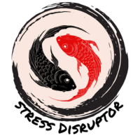
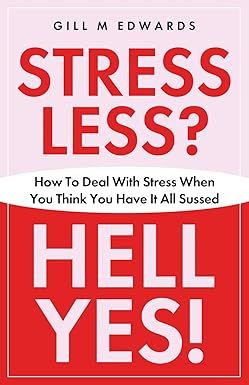

It's Time to Stress Less and Come Home to Yourself
Helping people in business, leaders, professionals — and anyone who needs to rediscover their calm — to step into themselves again.
Stop Drowning in Stress. Start Living Again.
After thirty-four years in nursing — sixteen as a clinical nurse specialist in respiratory medicine within the NHS — I know what chronic stress looks like. I've lived it. And I've found the way through.
Now, with over fourteen years as a qualified coach, I combine both scientific and spiritual approaches to help others do the same. Through 1:1 coaching, Reiki, and a whole lot of heart, I guide you out of overwhelm and back to yourself.
My Story
Services to Help You Find Your Calm
1:1 Stress Coaching
Personalised sessions where I see 'between the lines', helping you out of the stress cycle and back into control of your life.
Learn More →Reiki Healing
Gentle, powerful energy healing to restore balance, reduce stress, and support your body's natural ability to heal.
Learn More →Life Coaching
From years of lived experience and professional training, I help you navigate change, build resilience, and rediscover joy.
Learn More →“Through my own journey with chronic stress, I discovered that the path back to yourself is always there — sometimes you just need someone to help you find it.”
— Gill M Edwards
The Singalong Group
Have you ever been told you can't sing? To stop 'catawalling'? That you should just mime?
I believe that everyone can sing. And the joy we get from singing is priceless.
Join our welcoming Singalong group in Stoke-on-Trent, where everyone is welcome — especially those who've been told they shouldn't.
Find Out More
Stress Less? Hell Yes!
How To Deal With Stress When You Think You Have It All Sussed
Drawing on my years of experience as an NHS clinical nurse specialist and my own journey through chronic stress, I wrote this book for anyone who thinks they've got stress under control — only to find it creeping back in.
It's honest, practical, and written from the heart. Because sometimes you need someone who's been there to show you the way through.
Find Out MoreReady to Stress Less?
Take the first step towards finding your calm. I'd love to hear from you.
Let's Connect